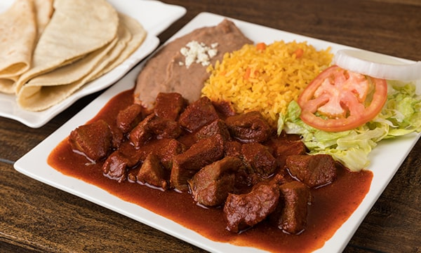

Asado de puerco recipe

Description
Asado de puerco, or asado de boda, is a classic of
Northern Mexico. Rich chiles that aren't too hot, lots of pork and some
super cool spices make up this dish.
Asado de puerco exists all over the northern part of Mexico and has lots
of interpretations, depending on where you are, and who's cooking it. The
recipe is slightly different in Nuevo Leon from Sonora, and it changes in
Durango and Chihuahua, too.
You'll also see the dish called asado de boda, because it's one of the
traditional wedding dishes in that part of the country. And slide over to
Sinaloa, and you'll see chilorio, which, while not the same dish, is
similar. (Chilorio tends to be shredded.)
Ingredients:
- 3 pounds pork shoulder
- Salt
- 3 Avocado leaves
- 1/4 cup lard, bacon fat or oil
- 100 grams dried guajillo chiles
- 100 grams dried pasilla or ancho chiles
- 10 grams arbol or cascabel chiles
- 4 cloves garlic
- 1 teaspoon ground cumin
- 1 teaspoon dried thyme
- 5 crushed cloves
- 1/8 to 1/4 avocado pit
- Zest of an orange
- Juice of an orange
Steps
-
Cut the pork into chunks between 1 and 2 inches across. Just barely
cover with water and bring this to a simmer. Skim any froth. Add salt to
taste and the avocado leaves and simmer uncovered until the water has
almost cooked away.
-
Meanwhile, pour boiling water over the guajillo, ancho and arbol chiles
and let them steep to rehydrate.
-
When they're soft, add the chiles, the garlic, cumin, thyme, cloves and
avocado pit to a blender. Add some water or stock and puree. You want
this to be about as thick as melted ice cream or housepaint.
-
When the water is almost all gone, remove the avocado leaves and add the
lard. Turn the heat to medium-high and brown the pork, stirring often.
-
Once the pork has browned, pour in a little water or stock and use a
wooden spoon to remove any browned bits off the bottom of the pot. Now
pour in the contents of the blender and stir. Add a little water to the
blender to get any good stuff out of it and add that to the pot, too.
Return the avocado leaves to the pot, add the orange juice and zest and
salt everything to taste. Let this simmer until the sauce thickens a
bit, about 15 to 20 minutes.
- Serve alongside rice and beans, or in a corn tortilla.